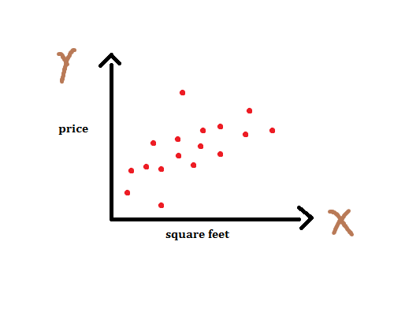
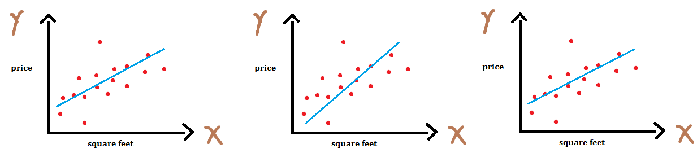
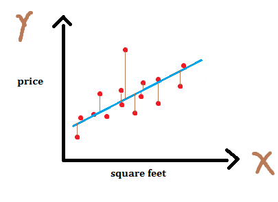
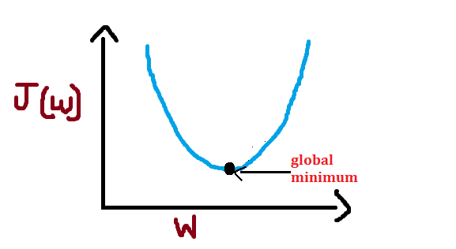
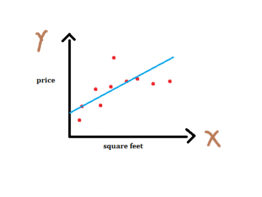

Index
- Introduction
- Types of Machine Learning
- Linear Regression
- Learning = Representation + Evaluation + Optimization
Introduction
Machine Learning is the subfield of Artificial Intelligence, which gives "computers the ability to learn without being explicitly programmed." It provides a set of algorithms that iteratively learn from the data. For example, we can build a machine learning model which can detect objects in an image by training our model on a large image dataset (i.e imagenet). In this series of posts, I will try to explain various algorithms of machine learning and tips and tricks on applied machine learning without getting into much maths and theory.
We can divide various Machine Learning algorithms in three types which are as follows:
-
Supervised Learning
Currently, most of the machine learning products use Supervised Learning. In this, we have a set of features or inputs (i.e image - X) and our model will predict a target or output variable (i.e caption of an image - y).
y = f(X)
In other words, our model learns a function that maps inputs to desired outputs. That's why it is also called as function approximation. Sometimes, features are refered as independent variables and targets as dependent variable. Supervised learnign problems can be further grouped into classification and regression problems. When the output variable is a category, such as "spam" or "ham" then it is known as classification problem. When the output variable is a real value, such as "price of the house" then it is known as regression problem. Examples : Linear Regression, Decision Tree, KNN etc.
-
Unsupervised Learning
In Unsupervised Learning, we have input data (X) but no corresponding output variable (y). Goal of unsupervised learning is to model the distribution of the data in order to learn more about the data. Unsupervised Learning problems can be futher grouped into clustring and association problems. When we want to discover inherent groupings in the input data it is known as clustering problem. When we want to discover rules that describe portions of the input data it is known as association problem.
-
Reinforcement Learning
In Reinforcement Learning, an agent acts in an environment so as to maximize its rewards. It's kind of trail and error method. Agent learns from past experience and tries to capture best possible knowledge to make accurate decision. For example, an agent which learns to play atari game.
Now a days, supervised learning has dominated the machine learning field. Almost any machine learning products you see use supervised learning. However, Unsupervised and Reinforcement Learning are active and hot area of research. In case of supervised learning, we have a labelled dataset to train our model. Here, labelled means each input raw is labelled with some output variable. For example, each image in a dataset might be labelled with the name of an object it contains. But, when we have an input data (X) but only few of them are labelled then this type of problem is known as Semi-supervised Learning. We will later discuss the concept called Transfer Learning , Andrew Ng said during his NIPS 2016 tutorial that transfer learning will be --after supervised learning-- the next driver of ML commercial success.
Linear Regression
Now, we will see various supervised learning algorithms and we will start with very simple yet powerful one called Linear Regression. As I mentioned earlier, supervised learning problems can be divided into two types of problems- Regression and Classification. As name suggests, linear regression is used for regression problems, that is, when target variable is a real value.
Let's start with an example, suppose we have a dataset containing house area and the price of the house and our task is to build a machine learning model which can predict the price of the house given the area of the house. Here is how our dataset looks like,
| area (sq.ft) | price (1k$s) |
|---|---|
| 3456 | 600 |
| 2089 | 395 |
| 1416 | 232 |
In linear regression, our task is to establish a relationship between target variable and input variables by fitting a line. This line can be represented as a linear equation y = m * X + b. Where, y - target variable, X - input data, m - slope, b - intercept. An intercept represents the intersection of regression line with y axis. Now we can plot our dataset as follows :
Apparently, we can fit n number of lines by tweaking coefficients m and b as shown below.
 We can rewrite our equation as y(x) = w0 + w1 * x where, w0 is the bias term and w1 is the slope. Here, wi's are known as the weights or parameters of our model. This equation can be used when we have one input variable (feature or independent variable) and this is called as simple linear regression . But this is not the ideal case. We usually deal with the datasets which have many features, the case when we have more than one features it is known as multiple linear regression . We can generalize our previous equation for simple linear regression to multiple linear regression - \(y(x) = w_0 x_0 + w_1 x_1 + w_2 x_2 + ... + w_n x_n \). Here, x0 = 1 and w0 , as I mentioned earlier, is the y axis intercept. To simplify the notation, we rewrite the above equation as follows:
\(y(x)\) = \(\sum\limits_{i=0}^n w_i x_i = w^Tx\)
Here, x0 = 1 since this is the intercept term. So, by changing the weights we can get different lines and now our task is to find weights for which we get best fit. One question you might have is, how can we determine how bad or good a particular line fits our data?. For this, we introduce a cost function which measures, for each value of m, how close the y's are to corresponding ytrue's. We define our cost function as simple sum of sqaured error. Here, 1/2 is added to make derivation easy as we will see later.
\(J(w)\) = \(\frac{1}{2}\sum\limits_{i=1}^n (y(x^i) - y_t^i)^2\)
As I mentioned earlier, this cost function calculates how far y's are from the corresponding ytrue's. We can show this in the graph as shown in figure - 3. Basically, our cost function calculates the distance between true target and predicted target which is shown in the graph as lines between sample points and the regression line. This is called residual.
For each value of weight, there will be some cost or an error. We want to find the value of weights for which cost is minimum. We can visualize this as follows :
As you can see, we get some value of cost/error for each value of weight. Here, I have used the word "global" and the reason is- In case of non-convex shape there will be more than one minimum but we want to find out the global minimum. For simplicity, I have used convex shape in above figure.
Gradient Descent
Essentially, what we do in supervised learning problems is finding the best weights for our model. Hence, our task becomes optimization task. Gradient Descent is one of the most popular and widely used optimization algorithm. Gradient descent can be used to minimize a cost function \(J(w)\) parameterized by a model's parameters \(w \in \mathbb{R}^d \) by updating the parameters/weights in the opposite direction of the gradient of the cost function \(\nabla_w J(w)\) w.r.t to the parameters. Mathematically we can write as
\(w_n = w - \eta \cdot \nabla_w J( w)\)
Here, \(\eta\) is the learning rate which determines the size of the steps we take to reach a minimum. We need to be very careful about this parameter since high value of \(\eta\) may overshoot the minimum and very low value will reach minimum very slowly.
There are three variants of gradient descent- Batch Gradient Descent, Stochastic Gradient Descent and Mini-batch Gradient Descent. Batch gradient descent computes the gradient of the cost function w.r.t to parameter w for entire training data. Since we need to calculate the gradients for the whole dataset to perform one parameter update, batch gradient descent can be very slow. Stochastic gradient descent computes the gradient for each training example \(x^i\). Mini-batch gradient descent computes the gradient for every mini-batch of m training example. If you are curious about gradient descent and its variants then check out this post by Sebastin Ruder.
In order to complete this algorithm we have to calculate the partial derivative term \(\nabla_wJ(w)\). Let us first derive equations for one training example and later we will modify it for more than one training example.
\(\nabla_wJ(w)\) = \(\frac{\partial}{\partial w_j} J(w)\) = \(\frac{\partial}{\partial w_j} \frac{1}{2} ( y(x) - y_t))^2\)
= \(2 \cdot\frac{1}{2} (y(x) -y_t) \cdot\frac{\partial}{\partial w_j} (y(x) - y_t) \)
= \((y(x) - y_t) \cdot\frac{\partial}{\partial w_j} (\sum\limits_{i=0}^n w_i x_i - y_t)\)
= \((y(x) - y_t) x_j\)
Now, we can rewrite our update rule as follows :
\(w_n\) = \(w - \eta \cdot (y(x) - y_t) x_j\) (Repeat until convergence)
We can modify this equation for more than one training example as follows :
\(w_n\) = \(w - \eta \cdot \sum\limits_{i=1}^n (y(x) - y_t) x_j\)
Note that we are updating our weights after going through entire dataset, that is, at each step we loop iterate through entire training dataset and then we update the weights. Can you recall the name of this variant of gradient descent? This is, Batch Gradient Descent. For stochastic gradient descent, we just need to remove the summation symbol from above equation. In practice, we use mini-batch gradient descent which takes best of both and performs update after going through a batch of n example. We can write update rule as:
\(w_n = w - \eta \cdot \nabla_w J( w ; x^{(i:i+n)} ; y^{(i:i+n)})\)
Seems like too much work for this simple linear regression, but believe me it's not, it's very easy. Let me briefly write some takeaways,
1. For simple linear regression, equation of line is y(x) = w0 + w1 * x1. Here, w0 is the intercept term and w1 is the slope of the line. We want to find w0 and w1 such that it minimize our cost function [eq num]. Both of these variables are known as weights or parameters of our model. We can easily extend this equation for multiple linear regression as shown in equation [number].
2. We start with small positive random weights .
3. Calculate the loss/cost/objective function as follows :
\(J(w)\) = \(\frac{1}{2}\sum\limits_{i=1}^n (y(x^i) - y_t^i)^2\)
4. We update our weights as follows :
\(w_n\) = \(w - \eta \cdot \sum\limits_{i=1}^n (y(x) - y_t) x_j\) (we derived this equation above)
5. Repeat steps 3 and 4 until convergence. In other words, repeat step 3 and 4 until \(J(w)\) < 0.0003. The number 0.0003 was chosen randomly.
Learning = Representation + Evaluation + Optimization
You might have concluded in your mind that supervised learning is all about finding weights which minimize our cost. And that's true. But let us dig deeper and gain some insights on how learning really works. We will discuss this in depth for the classification problems since there are the widely used ones. We can divide learning phase in three parts - Representation, Evaluation and Optimization .
Representation : Choosing a representation of a learner is tantamount to choosing the set of classifiers that it can possibly learn. This set is called hypothesis space.
Evaluation : An evaluation or objective function is needed to distinguish good classifiers from bad ones.
Optimization : We need a method to find the best classifier in hypothesis space. Here comes the optimization. The choice of optimization technique determines the efficiency of a learner. Gradient descent optimization technique which we discussed earlier is the first-order optimization technique.
One of the most important problem in the machine learning is called Overfitting. Overfitting happens when a model performs too well on training data but does not perform well on unseen data. It happens when a model learns the noise present in the training data. Conversely, when a model does not perform well on training data as well as unseen data then that is known as Underfitting.
